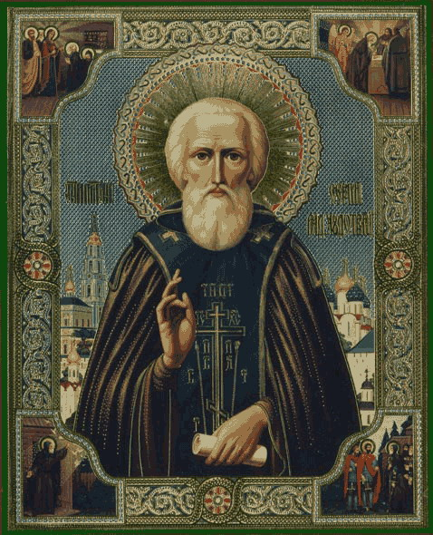

„Hoće li tko za mnom, neka se odreče samoga sebe, neka uzme svoj križ i neka ide za mnom.” (Mt 16,24)

Sveti Sergije Radoneški, rođen kao Bartolomej u Rostovu 1314. godine, smatra se jednim od najvećih duhovnih vođa i utemeljitelja ruskog monaštva. U mladosti je, nakon smrti roditelja, zajedno s bratom Stefanom napustio svjetovni život i povukao se u divljinu, gdje je pod vodstvom starca Mitrofana osnovao mala pustinjačka naselja. Nakon bratove smrti, Sergije je postao iguman zajednice koja je prerasla u Trojičnu lavru, jedan od najvažnijih duhovnih centara Rusije.
Njegov život obilježila je duboka molitva, post i služenje siromasima. Postao je poznat po čudesnim ozdravljenjima i proročkim vizijama. Vjeruje se da mu se ukazala Majka Božja s apostolima Petrom i Ivanom, obećavši mu trajnu zaštitu njegove lavre. Sergije je također imao ključnu ulogu u ujedinjenju ruskih zemalja pod vlašću Moskve. Pozvao je kneza Dmitrija Donskog da se bori protiv mongolske vlasti, a njegovi blagoslov i podrška bili su presudni za pobjedu u Kulikovskoj bitci 1380. godine, što se smatra početkom oslobođenja Rusije.
Sveti Sergije preminuo je 1392. godine, ostavljajući za sobom neizbrisiv trag u ruskoj povijesti i duhovnosti. Njegove relikvije, koje su pronađene netruležne 1422. godine, čuvaju se u Trojičkoj lavri i privlače hodočasnike iz cijelog svijeta. Danas se smatra zaštitnikom Rusije, molitvenikom za jedinstvo naroda i uzorom kršćanske poniznosti i hrabrosti.